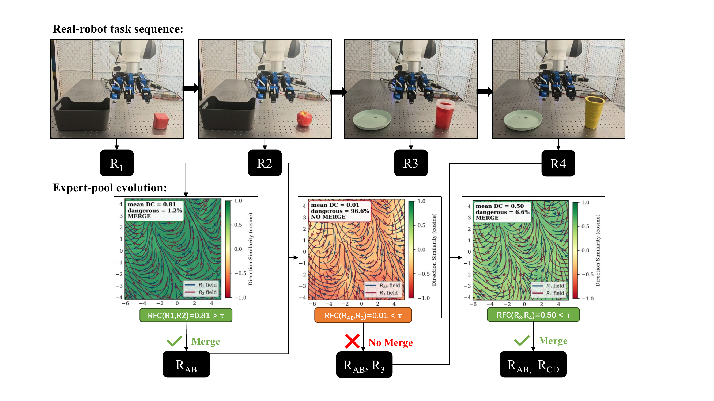
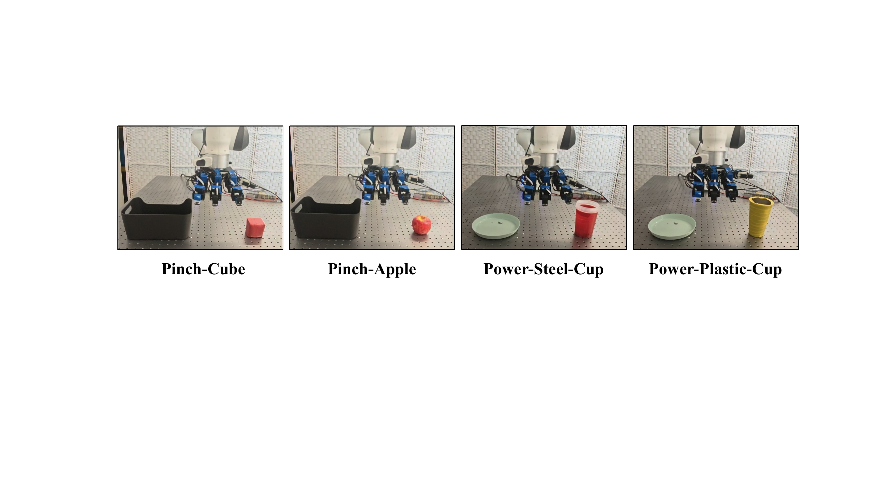

ResMerge enables data- and parameter-efficient continual adaptation of pre-trained robot policies. Each new task is acquired demo-free with residual RL, and its residual is merged into a bounded expert pool based on Residual-Field Consistency (RFC).
A short video overview of ResMerge—the problem, the Learn-and-Merge framework, and key results.
Consider a generalist robot policy deployed in a home or factory. The robot must continuously learn new tasks as they arrive sequentially, adapting to each one without degrading performance on tasks it already knows. Existing Parameter-Efficient Continual Fine-Tuning (PECFT) methods isolate per-task updates with adapters, but they (1) require substantial per-task demonstrations and (2) add one adapter per task, so both data and parameter cost grow linearly with the task stream.
ResMerge removes both bottlenecks: residual RL acquires each task demo-free, and RFC-guided parameter-space merging keeps the expert pool bounded—a similar task may need an opposing correction (unsafe to merge), while a different task may need an aligned one (safe to merge), which RFC detects directly in residual action space.
On the larger OpenVLA-OFT backbone, ResMerge reaches FWT 77%/53% (Spatial/Object), NBT 2%/1%, and AUC 95%/87%—approaching the Multi-Task oracle (95%/94% AUC) without any per-task demonstrations, while the Seq. SFT (LoRA) IL baseline still suffers heavy forgetting (NBT 98%/70%). On the smaller ViT-T backbone, ResMerge attains the highest AUC (83%/79%) and the most negative NBT (−3%/−8%) among the evaluated baselines. Negative NBT indicates positive backward transfer induced by RFC-based selective merging.
| Backbone | CL Method | MPE ↑ | Data Cost ↓ | LIBERO-Spatial | LIBERO-Object | ||||
|---|---|---|---|---|---|---|---|---|---|
| FWT ↑ | NBT ↓ | AUC ↑ | FWT ↑ | NBT ↓ | AUC ↑ | ||||
| ViT-T | Seq. SFT | — | 50 demos/task | 63 | 76 | 16 | 76 | 73 | 27 |
| ER | — | 50 demos/task | 63 | 29 | 50 | 70 | 28 | 57 | |
| PackNet | — | 50 demos/task | 57 | 15 | 59 | 58 | 18 | 56 | |
| TAIL | 0.70 | 50 demos/task | 51 | 56 | 60 | 58 | 50 | 70 | |
| DMPEL | 0.69 | 50 demos/task | 22 | 28 | 29 | 14 | 25 | 27 | |
| ResMerge (w/o merge) | 0.69 | 0 demo/task | 31 | 57 | 43 | 27 | 13 | 54 | |
| ResMerge (ours) | 1.00 | 0 demo/task | 42 | −3 | 83 | 49 | −8 | 79 | |
| ViT-T | Multi-Task (oracle) | — | 50 demos/task | — | — | 79 | — | — | 78 |
| OpenVLA-OFT | Seq. SFT (LoRA) | — | 50 demos/task | 0 | 98 | 47 | 10 | 70 | 62 |
| ResMerge (w/o merge) | 0.80 | 0 demo/task | 68 | −3 | 81 | 58 | 2 | 90 | |
| ResMerge (ours) | 1.00 | 0 demo/task | 77 | 2 | 95 | 53 | 1 | 87 | |
| OpenVLA-OFT | Multi-Task (oracle) | — | 50 demos/task | — | — | 95 | — | — | 94 |
Continual learning performance across backbones. MPE is normalized to ResMerge (=1.00 is our footprint; lower means more added parameters per task). Negative NBT = positive backward transfer from RFC-based selective merging.
Merging strategy (LIBERO-Object, ViT-T): RFC-gated selective merging is the only strategy that consolidates parameters without destructive interference—no-merge fails to consolidate and merge-all destroys via interference. Residual architecture: both MLP and LoRA residuals adapt equally well in the Learn stage (36% SR), but only LoRA survives merging (78% vs. 14% Merge-SR), because the low-rank constraint concentrates each task's adaptation in a structured subspace.
| Strategy | Learn-SR | Merge-SR | FWT | NBT | AUC |
|---|---|---|---|---|---|
| No Merge | 36 | 54 | 27 | 22 | 47 |
| Merge-All | 36 | 21 | 23 | 22 | 37 |
| ResMerge (ours) | 36 | 78 | 49 | −8 | 79 |
Effect of merging strategy (%).
| Residual Architecture | Learn-SR | Merge-SR |
|---|---|---|
| MLP Residual Policy | 36 | 14 |
| LoRA Residual Policy (ours) | 36 | 78 |
Effect of residual architecture (%).
We visualize the RFC trajectory along the real-robot four-task sequence. Each panel compares the two residual action-correction fields being evaluated: streamlines trace the per-state direction of each field, the background encodes local direction consistency (green: aligned, red: opposed), and the box reports RFC statistics over 2,000 sampled states. (a) After R1, R2: fields are co-aligned (mean DC 0.81) ⇒ merge accepted ⇒ RAB. (b) After R3: RAB and R3 disagree almost everywhere (mean DC 0.01) ⇒ merge rejected, R3 kept separate. (c) After R4: fields realign (mean DC 0.50) ⇒ merge accepted ⇒ RCD. The final pool {RAB, RCD} reproduces the hardware-level grouping exactly.

We deploy ResMerge on a Franka Emika Panda with a 16-DoF Leap dexterous hand and a single front-mounted RealSense D435 camera, with a frozen IMLE BC base policy. The robot sequentially learns four tabletop tasks in two paired groups, giving a hardware-level ground truth for merging: (T1) Pinch-Cube and (T2) Pinch-Apple pinch-grasp a small object into the box; (T3) Power-Steel and (T4) Power-Plastic power-grasp a cup onto the plate. Within each group tasks share grasp primitive and container but differ in object appearance, geometry, and friction; across groups both change.

ResMerge attains FWT 50%, NBT 7%, AUC 75%, outperforming DMPEL on both stability and overall performance. RFC selectively merges (T1,T2) into RAB and (T3,T4) into RCD, so the final pool contains two consolidated experts rather than four—matching the hardware-level grouping. Notably, RFC isolates residual transferability from base-policy capability: raw success rate would wrongly suggest R1 transfers better to the out-of-group T3,T4 than to its in-group partner T2; measuring similarity in residual action space recovers R1∼R2 as the actually-mergeable pair.
| Method | FWT ↑ | NBT ↓ | AUC ↑ |
|---|---|---|---|
| DMPEL | 24 | 23 | 54 |
| ResMerge (ours) | 50 | 7 | 75 |
Real-world continual learning results (%).
Representative rollouts of the four real-world tasks executed by ResMerge. For each task we show a success rollout alongside a failure case, illustrating both the learned behaviors and the remaining challenges (slippery objects, fine pinch grasps, and precise placement).
Success
Failure
Success
Failure
Success
Failure
Success
Failure